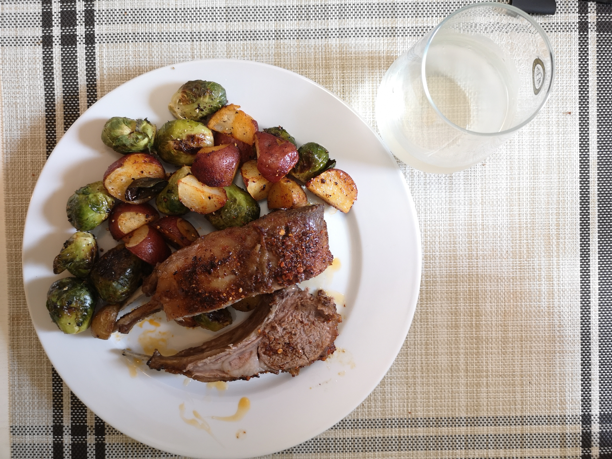
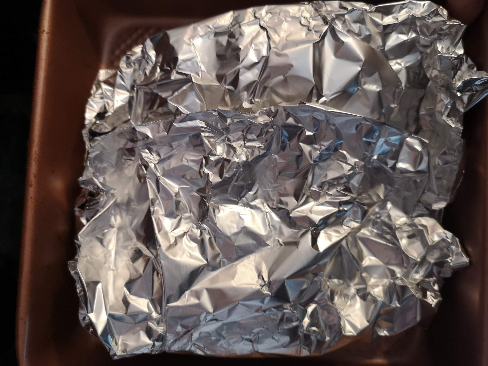
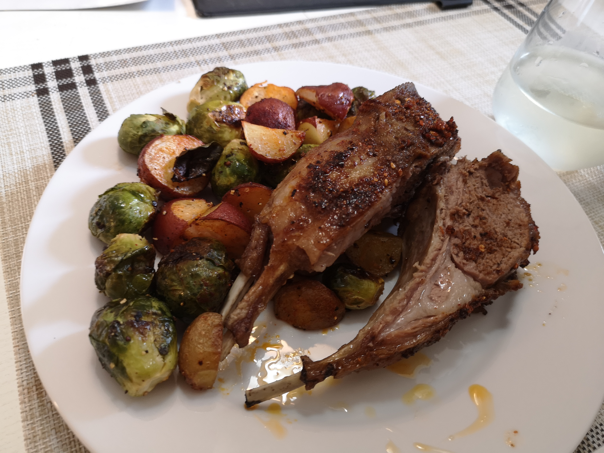

Roasted Lamb Chop | 烤羊排
This is a traditional way of roast lamb in Northern China. It ensures that the strong oder is totally removed, and that the meat is tender inside, crispy outside.
Ingredients
STEPS
01.
Place lamb chop in a pot. Add cold water to cover the meat. Add in 3 teaspoons of salt. If you love spice, add dried pepper and Sichuan peppercorn. Bring to boil, then stew for 10-15 min to make sure the blood is totally boiled out.
02.
Wash and dry the lamb chop. season all over with black pepper, chili powder and cumin.
03.
Wrap lamb up. Bake under 425 F in the oven for 15 in.
03.
Open the wrap, add olive oil. fat side up and upper broil until surface is a little bit crisp, about 3-5 min. Sprinkle with cumin and chili powder.

03.
Transfer to plate, cut and serve.
TIPS
At the stewing step, make sure that the water is salty enough, so that the meat can be fully seasoned. If you really do not like the strong odor of lamb, you can add cooking wine, ginger slices, or other things while stewing.
Wrapping up while roasting is to make sure the meat would not go dry. Chili powder is easy to get burned so we add that after meat is broiled.
You can pair the lamb with anything you like. For example Brussels sprout and potatoes can be baked alongside the lamb.
